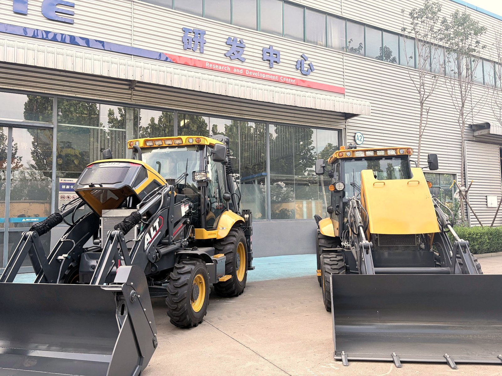
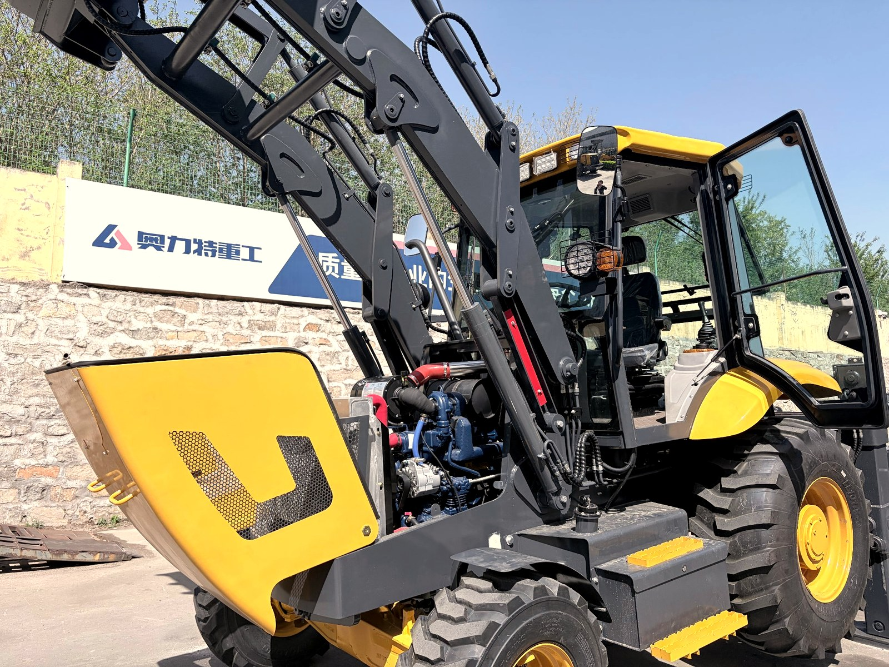
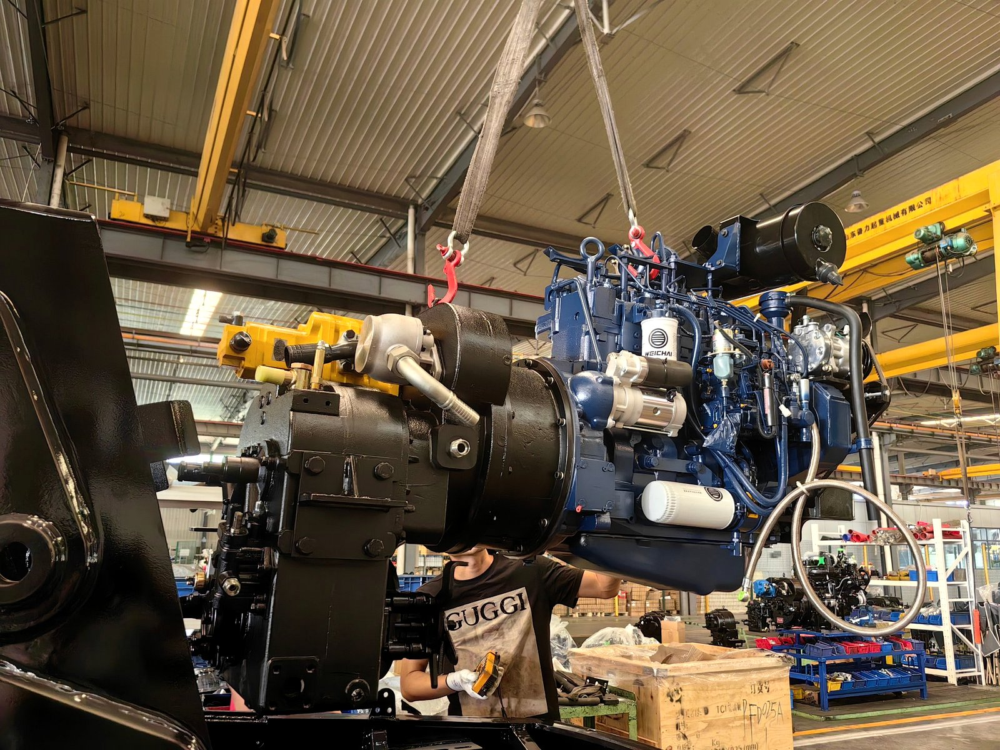

Every week, buyers ask me the same question: "How does a backhoe loader actually work?" They've seen the machine on a construction site — loader bucket in front, backhoe arm in back — but they don't know what's happening under the sheet metal or why this particular design has been the standard on job sites for over 70 years.
I spend most of my days on the factory floor, so I'll walk you through what a backhoe loader is, the five systems that make it work, and how those systems turn a single diesel engine into the most versatile machine on any site.

What Is a Backhoe Loader?
A backhoe loader is a tractor-like machine with three working parts:
- A front loader — the wide bucket on the front for scooping, loading, and grading
- A rear backhoe — the digging arm with a bucket on the back, similar to a small excavator
- A central cab — where one operator controls everything
That combination is what makes the machine special. Most construction equipment does one job well — an excavator digs, a wheel loader scoops, a dozer pushes. A backhoe loader does all three on a single chassis, with one operator. For small and mid-size sites, it's the only machine you need.
If a backhoe loader is a Swiss Army knife, the loader is the blade, the backhoe is the screwdriver, and the operator's skill is what makes them both useful.
The Five Systems That Make It Work
Underneath the yellow paint, every backhoe loader has the same five core systems. They're independent, but they depend on each other in real time. Let me take you through each one.
1. The Engine & Powertrain
The engine connects to the drivetrain through a torque converter, not a clutch. That's a fluid coupling that lets the engine keep running while the machine is stopped — so you can idle at a red light or pause at a dig site without stalling. From the torque converter, power flows into the transmission, usually a 4-speed manual or powershift, and then to the front and rear axles.
Why does this matter for you? Because the torque converter + powershift combo is what gives the machine its smooth, loader-style work feel. A backhoe loader doesn't jerk forward when you put it in gear — it ramps up smoothly. That same transmission also provides the hydraulic power takeoff (PTO) for hydraulic attachments like breakers and augers.

2. The Hydraulic System
The hydraulic system is what makes a backhoe loader powerful. Hydraulic oil under high pressure (typically 200–250 bar) drives everything that moves — loader arms, backhoe arm, bucket curl, steering, stabilizers, and any powered attachment.
Here's how it works in plain language:
- The hydraulic pump is bolted to the engine. As the engine spins, the pump pressurizes oil from the reservoir.
- The control valves — operated by the joystick levers in the cab — direct the oil to specific cylinders.
- The hydraulic cylinders are the muscles. Each one extends or retracts when oil pushes into it, moving whatever it's attached to.
- The return oil flows back to the reservoir, where it's filtered and reused.
Two pump designs are common: gear pumps (cheaper, work fine for lighter work) and load-sensing piston pumps (more expensive, but they save fuel and respond faster). On premium models like the BL 80-25 and above, load-sensing hydraulics are standard.
From the operator's seat, this whole system feels simple — push the joystick, the arm moves. But each joystick movement is opening and closing multiple valves to route oil to the right cylinder at the right pressure. That's why hydraulic failures always show up as slow, weak, or jerky movements. When you feel sluggish response, the cause is usually a pump, a valve, or a leak — not the engine.
3. The Front Loader Assembly
The front loader is what you'll see working most of the time on a job site. It's a simple but strong mechanical design:
- Two lift arms run from the front chassis to the bucket.
- Each lift arm is powered by a hydraulic cylinder that raises and lowers it.
- The bucket is mounted to the lift arms and curls forward/backward using a separate hydraulic cylinder.
The bucket capacity ranges from 0.5 m³ on compact machines to 1.5 m³ on the largest units. Material moves fast because the loader cycle is short — typically 8–10 seconds from ground level to full lift height.
One detail most buyers miss: the front loader doubles as the structural front axle mount. On a backhoe loader, the loader arms are part of the chassis. That's why you can't take them off the way you would on a wheel loader. It also means the loader arms are stressed every time the machine digs — which is why they're built from high-tensile steel and why a used machine with bent loader arms is a major red flag.
4. The Rear Backhoe Assembly
The backhoe arm is where the machine's digging capability comes from. It's also the part most people don't fully understand.
The backhoe has four moving parts, each powered by its own hydraulic cylinder:
- Boom — the big arm closest to the cab. Raises and lowers the whole assembly.
- Stick (or dipper) — the middle section. Extends the bucket's reach.
- Bucket — the digging tool at the end. Curls to scoop.
- Swing — the whole backhoe rotates side-to-side on a central pivot, controlled by hydraulic motors.
The swing function is the part people get wrong. On an excavator, the upper body rotates 360° on tracks. On a backhoe loader, the entire rear backhoe swings left and right (typically 180° total) on a pivot — but the cab stays facing forward. This is what lets the operator dig a trench right next to a wall on one side, then swing to dump the spoil on the other side without driving forward.
Dig depth depends on the boom/stick geometry. Most backhoe loaders dig 4–5.5 meters deep. The longer the stick, the shallower the breakout force — a trade-off between reach and digging power.
Two stabilizers (outriggers) extend from the rear chassis when you dig. These drop the back end down and lift the rear wheels off the ground, so the machine doesn't tip when you apply full digging force. Never dig without the stabilizers down. I see this mistake on job sites too often, and the result is usually a tipped machine, a damaged boom cylinder, or worse.

5. The Operator Cab & Controls
The cab is where it all comes together. A modern backhoe loader cab has:
- Two joystick controllers — left for the backhoe, right for the loader
- Foot pedals for throttle and auxiliary hydraulic functions
- A steering wheel (the machine is a vehicle, after all)
- Gear selector for forward/reverse and speed range
- Stabilizer and swing controls
Premium cabs add air conditioning, suspension seats, sound insulation, and joystick pattern conversion (so operators trained on SAE can switch to ISO controls or vice versa).
Here's a fact that surprises new buyers: a skilled backhoe loader operator can do in 30 seconds what takes an unskilled operator five minutes. The controls are simple, but the coordination between loader, backhoe, swing, and stabilizers is a learned skill. If you're buying your first machine, budget time for operator training — it's not optional.
How the Five Systems Work Together
Here's the part most explanations skip. These five systems don't run independently — they're coordinated in real time, and the operator is the one doing the coordinating.
Imagine a typical digging cycle:
- You drive the machine to the trench location (powertrain working).
- You drop the stabilizers and lock the parking brake (hydraulic valves acting).
- You idle the engine at higher RPM so the hydraulic pump can produce enough flow (engine + hydraulics coordinated).
- You curl the backhoe bucket into the soil (hydraulics driving the bucket cylinder).
- You swing the backhoe arm to the side (hydraulic swing motors).
- You release the bucket to dump (hydraulics again).
- You swing back, lower the bucket, and repeat — or you raise the front loader to do a cleanup pass (loader hydraulics now active).
Each step requires a different combination of systems. That's why a backhoe loader is more efficient than running two separate machines — one operator is doing both jobs from the same cab, with the same engine and the same hydraulic reservoir.
Why This Design Has Survived 70+ Years
The first commercial backhoe loader appeared in the late 1940s. The basic design hasn't changed much since then. There are reasons for that.
The backhoe loader design survived because no one has found a better way to put a loader and a backhoe on the same chassis. Excavators dig better but can't load. Wheel loaders load faster but can't dig. A backhoe loader does both — adequately well — for less money than buying two machines.
What has changed in the modern era is the engineering detail inside each system: better fuel injection, load-sensing hydraulics, joystick controls, ROPS/FOPS safety cabins, electronic monitoring. The bones are the same. The muscles got smarter.
What This Means When You Buy a Backhoe Loader
Understanding the systems helps you make better buying decisions. Here's what I tell my clients:
- Engine size matters less than powertrain design. A 75 hp machine with a load-sensing transmission and piston pump will outwork a 90 hp machine with old gear hydraulics.
- Hydraulic pump type is the single biggest productivity factor. Piston pumps cost more but cycle faster and save fuel. Worth it on machines you'll use 4+ hours a day.
- Backhoe geometry (boom + stick length) determines what you can dig. Match it to your typical job, not your biggest job.
- Cab quality is not a luxury. A tired, overheated operator makes mistakes. Air conditioning and a suspension seat pay back in productivity within months.
- Stabilizer design matters for safety. Look for wide-stance outriggers with flip-down pads. Skinny stabilizers on soft ground are a tipping risk.
If you remember one thing: a backhoe loader is five systems sharing one operator. Choose the machine where those five systems are balanced for your kind of work, not the machine with the biggest numbers on the spec sheet.
Want to See One in Person?
I run pre-delivery inspections on every machine before it leaves the factory. If you want to see exactly how a backhoe loader goes together — the engine, the hydraulic pump, the swing mechanism — I can walk you through it on a video call. Show you the inside of the cab, run through the controls, demonstrate the swing function.
Tell me what kind of work you're planning, and I'll recommend the model and configuration that fits. No spec-sheet nonsense, no upsell.
Want to see a backhoe loader from the inside?
Send me a message — I'll do a live walkthrough of the machine, the cab, and the controls, and answer whatever you want to know.
Ask me on WhatsApp